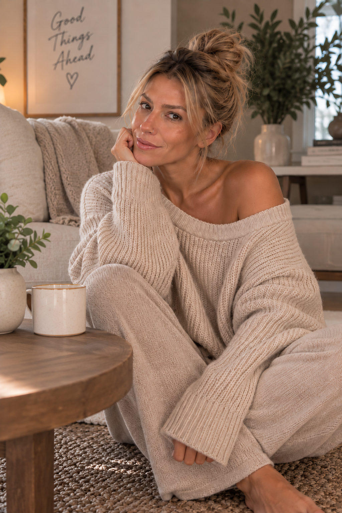

About me
Hi there, thanks for stopping by.
I’m Juliana, a Nutritionist who believes good nutrition has to work for both your body and your life.
My approach brings together nutrition, behaviour change and the realities of everyday life. Because knowing what your body needs is only part of the picture. How you eat is also shaped by your habits, preferences, routines, environment and experiences.
I’m here to help make nutrition clearer, more personal and easier to put into practice.
The philosophy behind the work
Nutrition begins with the person.
I provide personalized nutrition education and practical guidance to help you make informed choices for your health and well-being.
That means asking before assuming, understanding the “why” as well as the “what,” and building recommendations through conversation rather than handing over a generic set of rules.
To make nutrition easier to understand and easier to live.
Professional identity
- Credentials
- RNCP, NNCP, RRSW
- Registration
- Registered with IONC
- Membership
- Professional Member of CANNP
Nutritional Counselling & Education · Wellness Counselling
Explore services and appointments →A conversation is enough to begin
It starts with you.
Tell me what you are hoping to work on. We can find out whether this feels like the right fit—no pressure, no commitment.